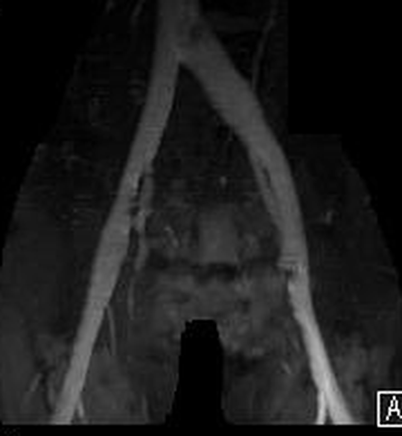
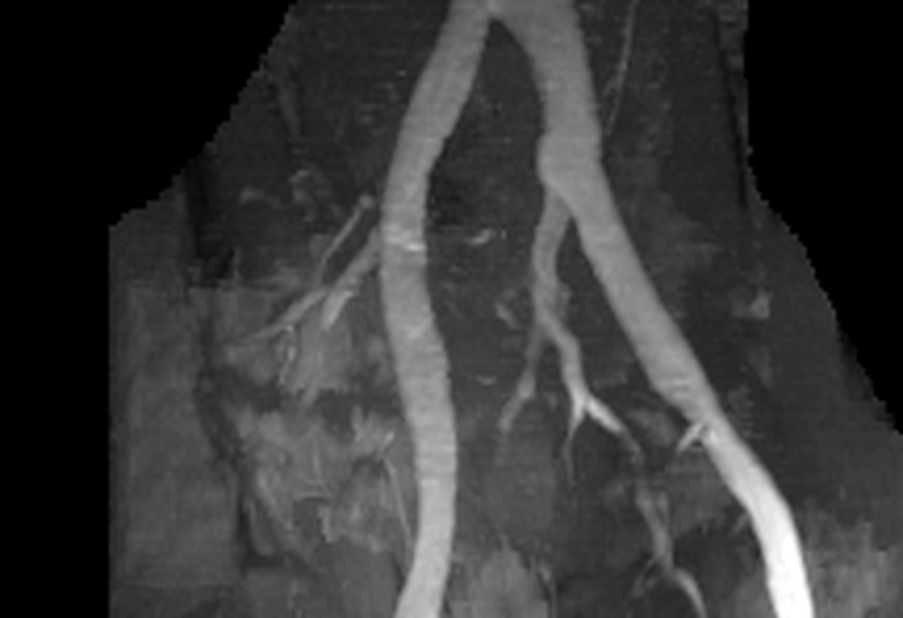
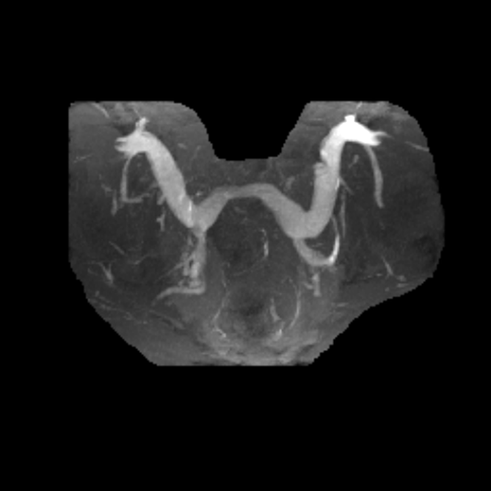

Andrii Mikhalov, медицинско досие
Andrii Mikhalov, медицинско досиеИзследвания и образна диагностика
Ключови изображения





Образна диагностика
- ЯМР с контраст, таз (ЯМР ангиография на таза 2010; ЯМР с контраст, на който се основава диагнозата от 2026 г., е в DICOM архивите). (запис на съдовия хирург, транскрипция и превод, ЯМ венография на таза, изображение, JPG, 21 KB, ЯМ венография на таза, изображение, JPG, 22 KB, ЯМ венография на таза, изображение, JPG, 11 KB, ЯМ ангиография на таза, 2010, ZIP, 25,6 MB, нужен DICOM-визуализатор, ЯМР на мозъка, ЯМ ангиография на глава-шия и таз, 2010, ZIP, 130,7 MB, нужен DICOM-визуализатор)
- КТ ангиография от 2011 г. (две изследвания, артериална фаза): вената не може да бъде надеждно оценена; в заключението са отбелязани разширени вени на перипростатния плексус. (КТ на корема, 13:14, 2011, ZIP, 88,1 MB, нужен DICOM-визуализатор, КТ на корема, 14:47, 2011, ZIP, 31,4 MB, нужен DICOM-визуализатор, КТ на корема с контраст, 2011, ZIP, 120,4 MB, нужен DICOM-визуализатор)
- Ултразвук 2010: вени на левия крак и скротум с Доплер. Ултразвук 2024: рефлукс на лявата гонадна вена; скротум и простата 2024. (Доплер ултразвук на вените на левия крак и скротума, 2010, ZIP, 6,6 MB, нужен DICOM-визуализатор, Ултразвук, урологичен комплекс за варикоцеле, 2024, PDF, 2,5 MB, Ултразвук на скротума, 2024, PDF, 2,1 MB, Ултразвук на простатата, 2024, PDF, 523 KB)
- ЯМР на лумбалния отдел 2011 и 2024; ЯМР на дясното коляно 2024; КТ на параназалните синуси 2013, 2016, 2024; КТ на главата 2016; дентален CBCT 2016. (ЯМР на лумбалния отдел на гръбнака, 2011, ZIP, 15,3 MB, нужен DICOM-визуализатор, ЯМР на дясното коляно, заключение, 2024, PDF, 223 KB, ЯМР на лумбалния отдел на гръбнака, заключение, 2024, JPG, 610 KB, КТ на параназалните синуси и ортопантомограма, заключение на рентгенолог, 2024, PDF, 136 KB, ЯМР на лумбалния отдел на гръбнака, 2024, ZIP, 46,7 MB, нужен DICOM-визуализатор, ЯМР на дясното коляно, 2024, ZIP, 34,2 MB, нужен DICOM-визуализатор, КТ на параназалните синуси, 2013, ZIP, 289,7 MB, нужен DICOM-визуализатор, КТ на параназалните синуси, 2016, ZIP, 232,3 MB, нужен DICOM-визуализатор, КТ на параназалните синуси, 2024, ZIP, 395,1 MB, нужен DICOM-визуализатор, КТ на главата, 3D, 2016, ZIP, 62,3 MB, нужен DICOM-визуализатор, Дентален CBCT, част 1, 2016, ZIP, 287,7 MB, нужен DICOM-визуализатор, Дентален CBCT, част 2, 2016, ZIP, 283,9 MB, нужен DICOM-визуализатор)
Лаборатория и други
- Лабораторни резултати 2024 (Odrex) и 2011 (ЕКГ, кръв, урина). PSA 5,11 ng/ml през 2024 г. (Лабораторни резултати, 2024, PDF, 107 KB, Лабораторни резултати, 2024, PDF, 137 KB, Лабораторни резултати, 2024, PDF, 112 KB, Лабораторни резултати, 2024, PDF, 174 KB, ЕКГ, 2011, PDF, 5,1 MB, ЕКГ, кръвни и уринни изследвания, невролог, рентгенова снимка (скен), PDF, 1,0 MB)
Всичко това е в Документи, а DICOM архивите са ZIP файлове.
← Назад